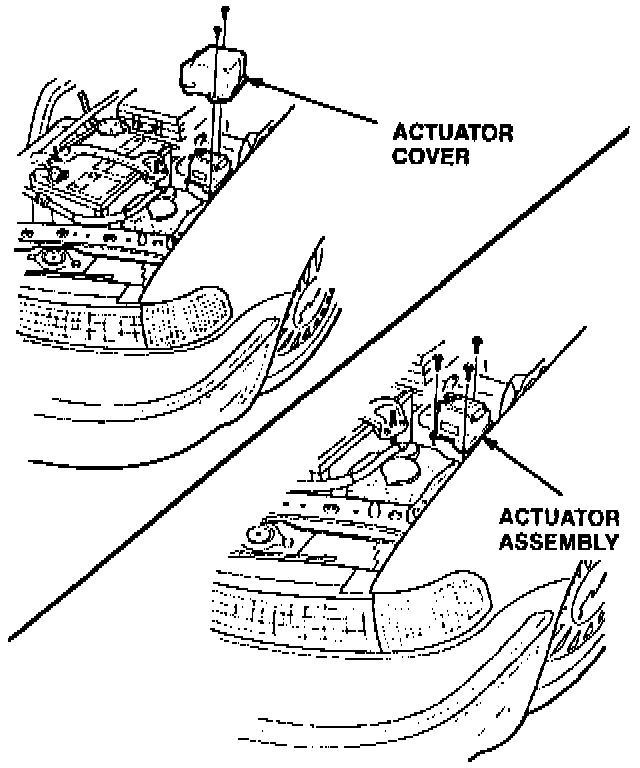
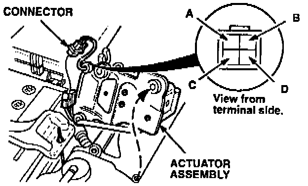
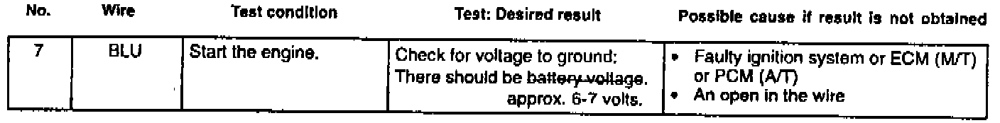

Cruise Control - Does Not Engage
February 28, 1995YEAR
1994
MODEL
LEGEND
VIN APPLICATION
See VEHICLES
AFFECTED
BULLETIN NO.
95-003
Cruise Control Will Not Engage
SYMPTOM
The cruise control does not set, or it sets momentarily, then disengages.
PROBABLE CAUSE
The cruise control actuator is faulty.
VEHICLES AFFECTED
1994 Legend:
Coupe - thru VIN JH4KA8... RC003222
Sedan - thru VIN JH4KA7... RC026371
CORRECTIVE ACTION
Test the cruise control actuator and, if necessary, replace it with the one listed under PARTS INFORMATION.
1. Test-drive the car to verify the customer's complaint.
Cruise Control Actuator:

2. Remove the cruise control actuator cover (two 6 mm bolts).
Actuator Connector:

3. Remove the cruise control actuator assembly (three 6 mm bolts), then roll the actuator on its side to access and disconnect the 4-P connector.
NOTE:
Handle the cruise control actuator assembly carefully; excessive jarring may temporarily correct the symptom, leading to an incorrect resistance value.
4. Measure (he resistance between terminals B and C of the cruise control actuator connector.
^ If the resistance is less than 50 ohms, replace the cruise control actuator assembly (see PARTS INFORMATION).
^ If the resistance is more than 50 ohms, perform the input test in section 23 of the Service Manual. Be sure to correct the input test procedure as shown in this service bulletin.
PARTS INFORMATION
Cruise control actuator assembly: P/N 36510-PY3-004
WARRANTY CLAIM INFORMATION
In warranty:
The normal warranty applies.
Out of warranty:
Any repair performed after warranty expiration may be eligible for goodwill consideration by the District Technical Manager or your Zone Office. You must request consideration, and get a decision, before starting work.
Operation number: 738155
Flat rate time: 0.5 hour
Failed P/N: 36520-PY3-004
Defect code: 032
Contention code: B01
SERVICE MANUAL CORRECTION

Make the correction in your 1994 Legend (Coupe and Sedan) Service Manuals on page 23-307.
Cruise Control Unit Input Test
When checking voltage at the BLU wire terminal, the desired result should be approximately 6-7 volts, not battery voltage.